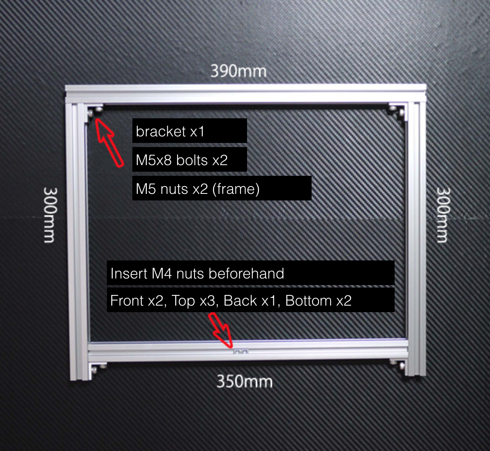
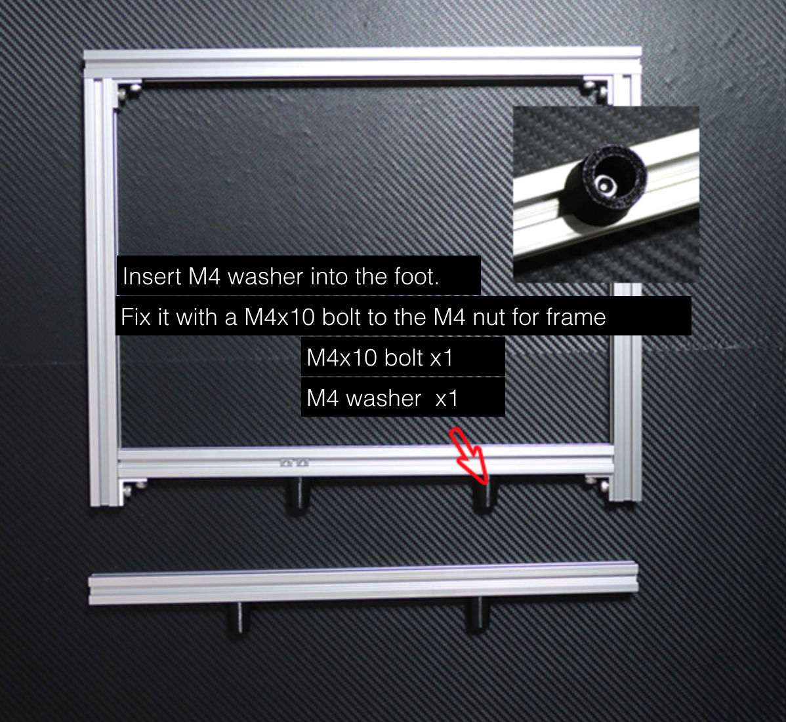
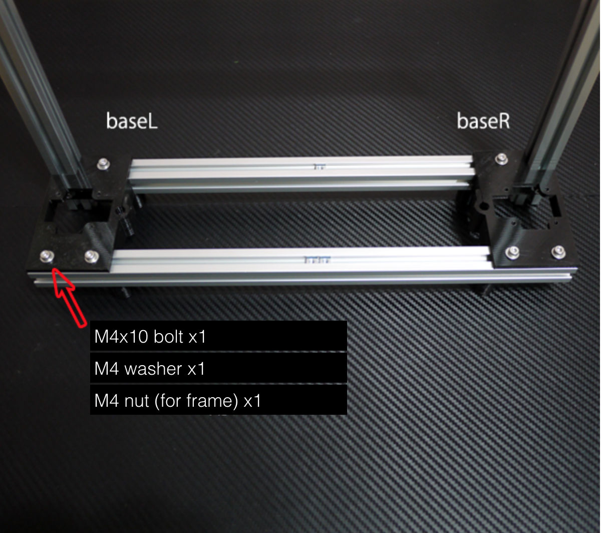
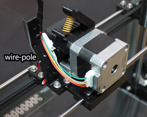
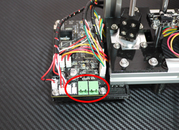

PRN3D description of hardware
|
| |
Mechanical parts
Electronics
|
| Mechanical parts |
Notification
- Lubricate bearing and linear bush with a lubricant, such as turbine oil.
- Screw hole and matching surface of printed parts may have to be modified.
- Modification of screw hole of printed parts should follow: M3→3.2mm / M4→4.2mm(or 4.0mm）
- Insert washer between printed parts and bolts.
- Milled parts do not require modification, without subtle deburring. Do not modify screw hole of milled parts.
- There are surplus screws inside the kit.
|
| Frame |
Required components

Create the main frame with aluminum frames. Fix the four corners with brackets.
Insert M4 nuts in advance into 350mm frame. Be careful, since the nuts cannot be inserted afterward.

Attach foot to the frame. Insert the washer into the foot beforehand.

Fix the frame and base.
Insert the M4 nuts(for frame) on top of the foreground 390 mm frame. (See the image)
|
| Z axis |
|
|
|
Create two Z couplings with M3x16 bolts, M3 washer, and M3 nuts.
Nuts will naturally get into the bolts, while tightening bolts.
|
|
|
|
|
At first, place the bolt for fixing 8mm shaft.
Assemble motors and shafts, and Z axis is completed. At the moment, we do not have to tighten the 8mm shaft.
|
| X axis unit |
Use 3 pieces of x-end-rod-clip. Remaining 1 will be replaced with Z axis limit adjuster

Push M6 nuts into x-endL,R. This nut is for feeding Z axis.
The hole of the nuts is made tightly, in order to decrease looseness.
|
|
|
Embed M4 nuts into x-end-R. This nut is for fixing pulley's axis.
|
|
|
|
|
Make a pulley with M4x25 bolts and others.
[Order of aligning components
bolt->washer->pulley(PLA)->washer->bearing(624)->washer->pulley(PLA)
|
|
|
|
|
File carefully, the internal part of x-end bearing holder.
Two coupled LM8UU should be linearly aligned, to enhance the smooth feed. |
|
Use the 7mm drill to make it smooth, the through hole for the carriage shaft.
To do this, insert the drill into the carriageA,B and rotate it.
Attach carriageB to carriageA with M3x12 bolt. |
|
|
|
|
|
|
LM6UU
If the assembly is loosen even after attaching carriageA,B, use polyimide tape(Kapton tape) to make it tight.
GT2 belt
Cut the belt to become 82cm〜85cm. Be careful, because the remaining belt will be used in the Y axis unit.
Fix one with a cable tie, and fix the other with the x-belt-clip.
Put the end of the GT2 belt (x-belt-clip side) out on top of carriage. |
|
| |
|
|
|
| |
| Y axis unit |
|
ベアリングホルダーの内部は入念にやすり掛けをしてください。また、LM6UUにはビニールテープを一重巻いてからホルダーに挿入してください。
y-blockのフレームへの固定は、予め入れてあるフレーム用M4ナットにM4x10ボルトで固定します。 |
| |
| エクストルーダー・ホットエンド |
| |
|
|
|
ノズルにPTFEテープを３回転ほど巻きコアに固定します。
|
|
|
|
|
バレルにもPTFEテープを巻きコアに固定します。
バレルには向きがあり中のPTFEチューブ（白）が見える側に巻いてください。
バレルはダブルナットで掴んで締めてください。中空なので力の入れすぎに注意してください。
|
|
|
|
|
サーミスターのリード線にPTFEチューブを被せます。
サーミスター（ガラス部分）はポリイミドテープを一重巻いて保護してください。
M3x5ボルトとワッシャーでサーミスターのリード線を挟んでコアに固定します。
|
|
|
|
|
サーミスターのリード線を曲げコアに接触するようポリイミドテープで固定します。
ポリイミドテープは３重程度巻いてください。
|
|
|
|
ベースにはtypeA,Bの２種類あります。入手性の問題で現在はtypeBを使用しています。
性能差は特にありませんが取り付け方法に違いがあります。 |
|
|
|
|
マウント、ベース、ホットエンドを組み付けます。
M6x20ボルトでしっかりベースとマウントを固定してください。
バレルは中空ですのであまり力を入れすぎないように慎重に締め付けてください。
|
|
|
|
|
ヒーターASSYを取り付け、サーミスターに配線（白）を半田付けします。
※ヒーターは作業に入る前に抵抗値が３オーム程度であることを確認してください。
ヒーターのリード線（赤）は、付け根から曲げてしまうと断線する恐れがあるため、
付け根をガラスチューブごとラジオペンチで掴み、少し離した位置で曲げてください。
半田付け部分は熱収縮チューブで絶縁してください。 |
|
 |
|
|
クイックリリース・レバーのラフト部分をカットします。
623ZZベアリングはM3x10セットスクリューで取り付けます。 |
|
 |
|
|
クイックリリース・ベースにM3ナットを押し込みM3x12ボルトを取り付けます。
このボルトはスプリングのコンプレッション調整用※として用いられます。
※レバー上部の穴からスプリング内部に六角レンチを通しボルトを回し調整します。左方向に回すとコンプレッションが強くなります。
Φ2.5の穴はフィラメントをドライブギアへ導くための穴です。2.5mmのドリルで整形してください。 |
|
| |
|
|
最後にモーター、ドライブギア、ヒートシンク、ファンを組み付けて完成です。
ドライブギアがモーターシャフトに嵌り難い場合は、穴を5mmのドリルで整形してください。 |
|
| |
|
| フィラメントがバレルの中まで通ることを確認してください。 |
|
|  |
|
|
エクストルーダーをキャリッジに固定した後、wire-poleをキャリッジに固定してください。
wire-poleは配線の引き出し部分の支えになります。配線をまとめタイラップで固定してください。 |
|
|
| エレクトロニクス |
| リミットスイッチ |
| 軸 |
PLA部品名 |
固定ボルト |
取り付け場所 |
備考 |
| Ｘ |
x-limit |
M3x16 |
Ｘ軸シャフト |
Ｘ軸の可動範囲には10mm程度の余裕があるのでキャリッジケーブルとx-end-Lが干渉しない位置に固定してください。 |
| Ｙ |
y-limit |
M3x10 |
前フレーム |
Ｙ軸の可動範囲にはほとんどクリアランスがないので慎重に位置決めしてください。 |
| Ｚ |
z-limit |
M3x20 |
Ｚ軸シャフト |
挟み込みがきつい場合はヤスリなどで調整してください。 |
※リミットスイッチ基板の固定には樹脂ワッシャーを用いてください。ただし、PRN3D-LS v2（シルク面に記載）は通常の金属ワッシャーをお使いください。
Ｙ軸リミットスイッチはフレームに予め入れておいたフレーム専用ナットで固定してください。
※配線色や形状は出荷時期で違う場合があります。
|
| Z軸リミットアジャスター（拡張分） |
ダイヤルを回転することでＺ軸の原点調整が簡単にできます。原点はダイヤル１回転で0.5mm移動します。
x-end-rod-clipとの置き換えで簡単に追加できます。 |
|
|
|
|
必要部品 （既存部分に追加のため、新たに必要な部品のみ示しています。）
| 部品名 |
個数 |
備考 |
| 造形部品 |
|
download |
| スプリング 8x20 |
1 |
サンエス標準バネ 品番AP080-020-0.8 1.434N/mm
※同程度のバネであれば他でも可 |
| M3x35〜40 |
1 |
アジャスター軸 |
| M3x16 |
2 |
リミットスイッチ固定用 |
| M3x12 |
2 |
モーターと共締めに使用 |
| M3ワッシャー |
1 |
|
| M3ナット |
2 |
|
|
|
造形部品 (z-limit-adjuster-add.stl)
リミットスイッチのバージョン違いにより、取り付けねじの受け側部品は２種類あります。
ねじ穴の間隔が違いますのでご注意ください。 |
|
| 組み立てはアーカイブ中のz-limit-adjuster-add-fig.skpを参考にしてください。 |
|
| |
|
| コントロール基板 |
※PRN3DのモータードライバーはTI製DRV8818を搭載しています。オリジナルGEN6で使われているドライバーDRV8811と比べはるかに低損失（
0.37-Ω (HS + LS)）なためPRN3Dではヒートシンクは不要です。
モーターリファレンス電圧 ※予め調整されていますので通常は調整の必要はありません。
| TP1 |
X |
1.5V |
|
Vref-GND間の電圧を調整します。
VRを右に回すと電圧が下がります。0.1V程度の誤差は許容範囲です。神経質に調整する必要はありません。
※VRの調整は、調整ドライバーか精密ドライバーで丁寧に行ってください。無理な力を加えると故障の原因となります。 |
| TP2 |
Y |
1.5V |
| TP3 |
Z |
2.1V |
| TP4 |
E |
1.5V |
|
ヒーテッドベッド
※バージョンアップしました。配線作業はこちらの説明書（PRN3D-2-HB.pdf）を参照ください。
|
|
| |
|
|
y-endへの固定はスプリングを用いフローティングにしてください。
さらに、ヒーテッドベッドの高さ調整後はダブルナットで緩まぬようにしてください。 |
| 完成品ご購入のお客様 |
準備
ご使用前に簡単な組み立てが必要です。 |
Ｙテーブル（ヒーテッドベッド）をM4x10ボルトでフレームに固定します。固定用のボルトは予めフレームに取り付けられていますので取り外して使います。
▲が取り付け位置になります。
|
|
Ｙ軸モーターのケーブルを接続します。
|
|  |
|
サーミスターとヒーターのコネクターを接続します。
|
簡易スプールホルダーを＋ドライバーで固定します。ねじ類は予めスプールホルダーに取り付けてあります。
電源を接続すれば組み立ては完成です。Ｘ軸水平調整、Ｚ軸調整（ホットエンドとの距離調整）を行ってください。
詳しくは、pronterfaceを参考にしてください。
※製造工程でホットエンドの検査時に若干のPLAフィラメントを使用する場合があり、コア内部にフィラメントが残っている場合があります。
※プリントの際は必ず板ガラスをご使用ください。
|